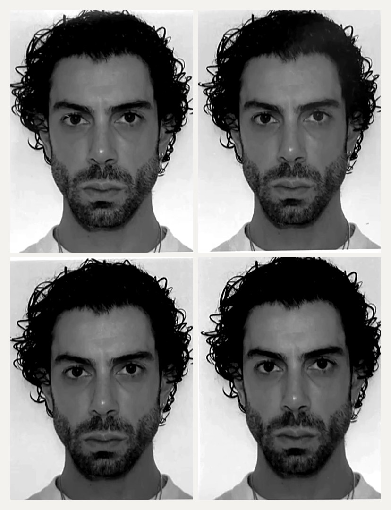

Adrien PonsStyliste · personal shopper · vintage dealerParis
Un fil. Plusieurs formes.

Plusieurs métiers en apparence. La même matière, regardée sous différents angles : chercher, observer, comprendre, trouver.
- AP-01 · ÉtudesPsychologie
La psychologie d'abord, pour comprendre les gens, à l'Université Paris Descartes, puis un bachelor en marketing du luxe. Très vite, une évidence : on raconte beaucoup de soi par ce qu'on porte. Le vêtement comme outil de confiance et de bien-être. Observer, écouter, poser les bonnes questions avant de proposer quoi que ce soit : une façon de faire qui sert aujourd'hui autant en boutique qu'en rendez-vous de styling, et jusque dans l'observation du comportement des chiens chez Mauvais Cabots.
- AP-02 · Près de dix ansLe vêtement, côté boutique
Alternances, stages, vente, puis l'ouverture et le développement de boutiques pour des marques de mode à Paris. L'objectif : apprendre sur le terrain, au contact du client, en faisant le lien entre tous les maillons de la chaîne. Gérer la pression, manager, rester diplomate. Et chaque jour, une clientèle très variée, abordée avec sincérité pour la guider dans la bonne direction.
- AP-03 · Depuis 2020Vintage et seconde main
Tout commence sur Vinted, en parallèle du retail, bien avant de quitter le salariat. Un constat : les créateurs d'aujourd'hui puisent sans cesse dans le vintage. Plus intéressant, alors, d'aller fouiller soi-même dans ce qui existe déjà : des pièces souvent mieux faites, et moins chères. Chiner, reconnaître une coupe, une matière, une époque. Puis ADN.bazaar, et aujourd'hui la boutique ICONIC Vintage, tenue en solo. Avec l'association Au Milieu, la même idée appliquée au réemploi et à l'artisanat.
- AP-04 · Depuis 2024Stylisme
La publicité, le film, le shooting. Lire un brief, imaginer des personnages, trouver les pièces, habiller sur le plateau. Back Market, Lidl, Visa x Deliveroo, Dunkin'. Tout ce qui précède sert ici : l'écoute, le terrain, la connaissance du vêtement.
- AP-05 · Aujourd'huiPersonal styling
Le regret du retail, c'était de ne jamais avoir assez de temps avec chaque client pour vraiment le connaître. Le personal styling, c'est ce temps-là : conseil en image, personal shopping, accompagnement sur le vestiaire.
Paris, toujours / les vêtements comme matière première / chiner, chercher, trouver / des pièces qui ont déjà vécu / un brief à interpréter / une personne à écouter
Styliste freelance depuis 2024. Le vintage depuis bien avant. Et près de dix ans dans le vêtement, de la vente au management de boutiques, jusqu'à la boutique vintage tenue en solo aujourd'hui. Le sourcing et la seconde main nourrissent aujourd'hui le travail de stylisme, et le retail a appris l'essentiel : écouter une personne avant de lui proposer quelque chose.
Paris · français, anglais · stylisme photo et vidéo, sourcing vintage, menswear, conseil en image
Avec un projet comme avec une personne, le point de départ reste le même : comprendre.